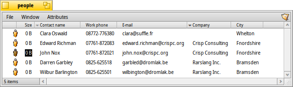

日本語
日本語 Français
Français Deutsch
Deutsch Italiano
Italiano Русский
Русский Español
Español Svenska
Svenska Українська
Українська 中文 ［中文］
中文 ［中文］ Português
Português Suomi
Suomi Slovenčina
Slovenčina Magyar
Magyar Português (Brazil)
Português (Brazil) English
English属性
属性 (Attribute) とは、ファイルに属するけれどもそのファイルの一部ではないデータフィールドのことです。たとえば、属性はファイルサイズの計算には含まれませんが、属性をコピーしたり、ファイル自体に触れることなく属性に変更を加えたりできます。システムはこれら属性をファイルサイズやファイルタイプ、ファイルが最後に変更された日付などを保存するのに使用します。この仕組みはほかのオペレーティングシステムやそのファイルシステムと似ています。
ほかのオペレーティングシステムとの違いは、任意のファイルに対して任意の種類の属性を追加できること、および、Tracker ウィンドウの中でその属性を表示したり編集したりすることが可能であることです。必要なことはファイルタイプに追加する属性の種類 (文字列や整数値、時刻など) を定義し、属性に名前と説明を付けることだけです。
ファイルそのものは中身を含んでいる必要すらまったくありません。たとえば、次の People ファイルをご覧ください:
ご覧のとおり、これらはすべて属性が付与された大きさが 0 のファイルです。Tracker ウィンドウの右側で、"John Nox" の電子メール属性を編集中です。
People ファイル、電子メールファイル、または音声ファイルがデフォルトでそうしているように、これら属性をインデックス化することにより、Haiku の高速クエリシステムを使用して属性を検索することもできます。
 Tracker における属性
Tracker における属性
属性はデータベースやスプレッドシートと非常によく似た形で表示されます。Tracker を使うことで、どの属性 (列) を表示するのかを選択したり、属性に従ってファイルリストの順番 (行) を並べ替えたりできます。
Tracker で属性を操作するには、Tracker ウィンドウを開いてメニューをクリックし、表示したい属性を選択します。あるいは単純に列見出しを右クリックし、コンテキストメニューで該当する項目をマークします。また、列見出しをドラッグ＆ドロップするだけで、列を再配置できます。列をウィンドウの外に移動させることにより、不要な列をすばやく取り除けます。
列見出し中の 2 つの属性の間の線をダブルクリックすると、列幅が自動的に適切なサイズに調整されます。
列見出しをクリックすると、ソートの順序が昇順から降順へ切り替わります。SHIFT を押しながら列見出しをクリックすることで、2 番目のソート順序を決めることができます。たとえば、1 番目のソート順序を会社名、2 番目のソート順序をコンタクト名にして People ファイルを並べ替えることができます。例として上のスクリーンショットをご覧ください。2 番目のソート順序は、列見出しすぐそばの、1 番目のソート順序よりも明るい色の目印でマークされています。
これら属性の編集はファイルのリネームと同様にシンプルです: 項目をクリックするか、ALT E を押します。属性間の移動は TAB および SHIFT TAB で行います。変更を適応せずに編集モードを抜けるには ESC を押します。
ターミナルにおける属性
コマンドラインがお好みの場合やスクリプトを使って大量のファイルを処理しようという場合に備えて、ターミナルから属性を制御できるコマンドがいくつか用意されています。
listattr
listattr は個々のファイルの属性の一覧を表示します。属性の中身については表示しません。
使い方: listattr 'filename' ['filename' ...]
上のスクリーンショットの例です:
~/people ->listattr Clara\ Botters
File: Clara Botters
Type Size Name
----------- --------- -------------------------------
MIME String 21 "BEOS:TYPE"
Text 14 "META:name"
Text 6 "META:nickname"
Text 1 "META:company"
Text 18 "META:address"
Text 8 "META:city"
Text 1 "META:state"
Text 1 "META:zip"
Text 1 "META:country"
Text 1 "META:hphone"
Text 13 "META:wphone"
Text 1 "META:fax"
Text 19 "META:email"
Text 1 "META:url"
Text 5 "META:group"
Raw Data 20 "_trk/pinfo_le"
131 bytes total in attributes.
コンタクト情報を保持しているすべての "META:*" 属性に加えて、システムによって管理されている次の 2 つの属性が存在します:
BEOS:TYPE は MIME 文字列としてファイルタイプを保持しています。この例では "application/x-person" です。この属性によりデフォルトのアイコンやファイルをダブルクリックしたときなどにそのファイルを開くアプリケーションが決まります。
"_trk/pinfo_le" は Tracker がファイルのアイコンの位置を記録するために使用する属性です。
catattr
catattr はファイルの指定された属性の内容を表示します。
使い方: catattr [--raw|-r] attr_name file1 [file2...]
先のファイルを再度例にします:
~/people ->catattr META:city Clara\ Botters Clara Botters : string : Whelton
addattr
addattr はファイルに属性を追加します。同時に属性の内容を埋めることもできます。
使い方: addattr [-t type] attr value file1 [file2...]
または: addattr [-f value-from-file] [-t type] attr file1 [file2...]
type は次のうちのいずれか 1 つです:
string, mime, int, llong, float, double, bool, icon, raw
または数値です (例: 0x1234, 42, 'ABCD', ...)
デフォルトは "string" です。
ではここで、親友の Clara が多国籍企業である Barkelbaer 社で働くことになりました。これまで空であった "Company" 属性 (「文字列」型) をその情報で埋めましょう:
~/people ->addattr -t string META:company Barkelbaer\ Inc. Clara\ Botters
rmattr
rmattr はファイルから属性を削除します。
使い方: rmattr [-p] attr filename1 [filename2...]
'attr' はそのファイル属性の名前です。
'-p' が指定されると、'attr' はパターンとみなされます。
実用的な観点から見れば、単に "Fax" 属性の内容を埋めないことで十分対応できますが、次のようにタイプすることにより、Clara ファイルから "Fax" 属性を完全に削除できます:
~/people ->rmattr META:fax Clara\ Botters
copyattr
copyattr は 1 つ以上のファイルの属性を、ほかのファイルにコピーします。デフォルトでは実際のファイルの中身についてはコピーされません。
使い方: copyattr <options> <source> [ ... ] <destination>
属性に加えてファイルの中身そのものもコピーしたい場合は、"-d" または "--data" オプションを追加します。
以上のコマンドに関する情報や各コマンドのオプションに関する情報は、コマンド名のうしろに "-h" または "--help" を続けてタイプすることにより見られます。